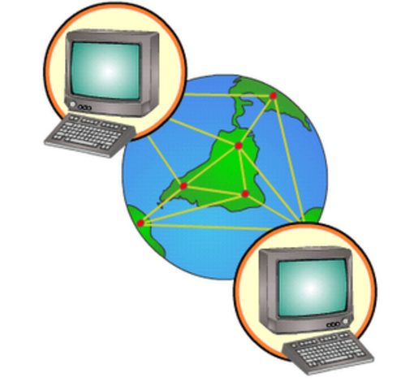
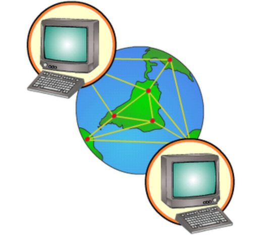
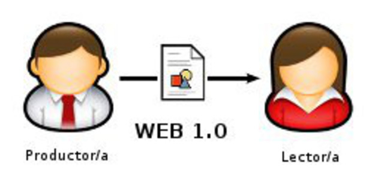
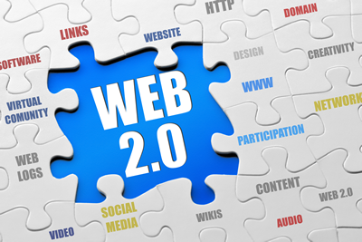
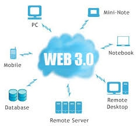

| Evolucion. |
| Hito |
Hechos |
Imagenes |
Referencias |
| Internet |
- 1961 Publico desde el MIT el primer documento sobre la teoría de conmutación de paquetes.
- 1969 Se estableció la primera conexión de computadoras, conocida como ARPANET, entre tres universidades en California y una en Utah, Estados Unidos.
- 1982 Es una descripción de protocolos de red desarrollado por Vinton Cerf y Robert E. Kahn y fue implantado en la red ARPANET
- 1989 Integración de los protocolos OSI en la arquitectura de internet, facilitando el uso de distintos protocolos de comunicaciones.
|
 

|
https://marketing4ecommerce.mx/historia-de-internet/. |
| WEB 1.0 |
1990 Fue la primera versión en aparecer, en ella solo se podía consumir contenido. Se trataba de información a la que se podía acceder, pero sin posibilidad de interactuar; era unidireccional.
1991 Se publica la primera página web creada por Tim Berners-Lee usando un computador NeXT.
1994 WebCrawler fue el primer metabuscador de la web en proporcionar busqueda de texto completo.
1995 Jeffrey Bezos de 34 años, fundó, en Seattle a Amazon.com, un comercio de libros por Internet.
|
 |
https://es.wikipedia.org/wiki/Web_1.0 |
| WEB 2.0 |
2004 Contiene los foros, los blogs, los comentarios y después las redes sociales. Permite compartir información.
2004 La primera conferencia sobre la web 2.0 se celebró en Octubre de 2004
2006 Internet alcanzo los mil cien millones de usuarios. Se prevé que la cantidad de navegantes de la red aumentara a 2,000 millones.
|


|
http://www.scielo.org.mx/scielo.php?script=sci_arttext&pid=S0185-19182011000200004 |
| WEB 3.0 |
2010 Se asocia a la web semántica, un concepto que se refiere al uso de un lenguaje en la red. Por ejemplo, la búsqueda de contenidos utilizando palabras clave.
2012 Internet tiene 634M de sitios web de comercio y ventas que superan los 100 mil millones de dólares a nivel global.
|

|
https://www.sciencedirect.com/
science/article/pii/S0212656709005083 |
| WEB 4.0 |
2014 Las aplicaciones móviles representaron mas de la mitad del tiempo de uso y visualización de contenidos digitales.
2015 Se centra en ofrecer un comportamiento más inteligente y más predictivo, de modo que podamos, con sólo realizar una afirmación o una llamada, poner en marcha un conjunto de acciones que tendrán como resultando aquello que pedimos, deseamos o decimos.
2020 La comprensión del lenguaje y la capacidad de procesar una orden o recomendación serán unos de los elementos mas importantes.
2020 Se potencia la web semántica con el aporte de la inteligencia artificial para así proveerle a los consumidores una mejor experiencia.
|

|
https://www.esan.edu.pe/apuntes-empresariales/2019/03/
que-es-la-web-40-y-por-que-debes-estar-preparado-para-lo-que-se-viene/ |